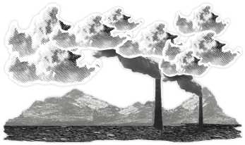
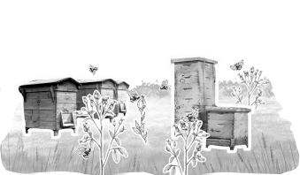
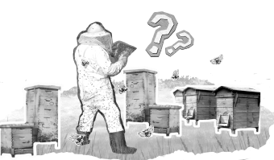
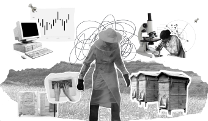
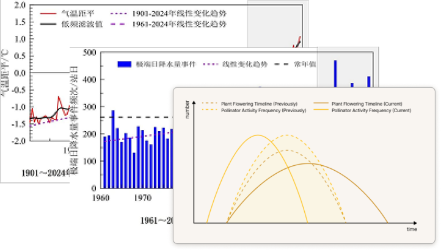
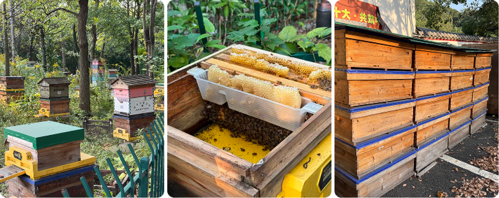
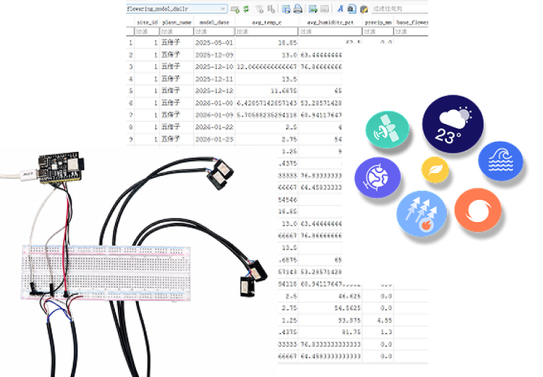
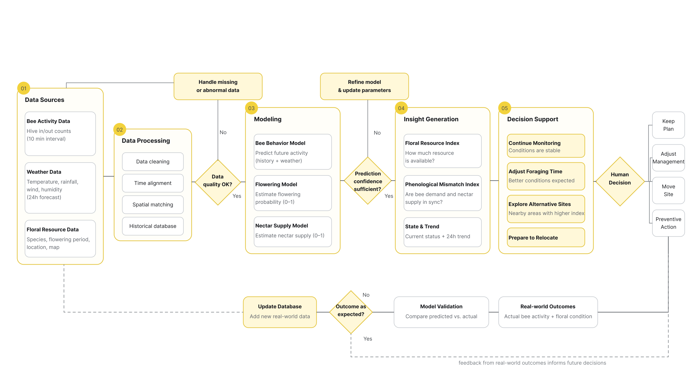
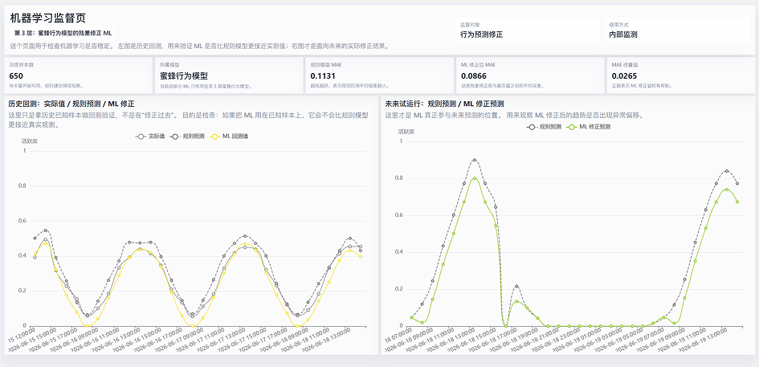

01 Website Overview
Bee Cue brings together weather, flowering, and bee activity data in one platform. This demo introduces the homepage, the system’s main functions, and how different data sources are organized across the website.
Website System / Predictive Support
Bee Cue combines weather, flowering, and colony activity data into a predictive decision-support system, helping beekeepers understand emerging mismatch risks and compare possible responses.
.png?v=1790741508642912190)
Bee Cue is a graduation design project that translates ecological prediction into a readable, interactive and working web system for beekeeping practice.
Graduation Design / Interactive Website / Data Visualization System
I led the end-to-end design and development of Bee Cue’s digital system, from system architecture and prediction logic to interaction design, data visualization and front-end implementation.
Collaborators contributed the ecological corridor design and hive sensing component.
2025 - 2026
Working Website / Data Dashboard / Prediction Logic / Project Film / Research Report
Python, HTML, CSS, JavaScript, Weather API, Sensor Data, Rule-based Models, Machine Learning Correction
China Academy of Art, Art & Technology Graduation Project
The final outcome is a functional web system connecting a site-based map, ecological indexes, bee activity data, scenario comparison and AI-assisted follow-up.
 Open Live Website ↗
Open Live Website ↗Bee Cue brings together weather, flowering, and bee activity data in one platform. This demo introduces the homepage, the system’s main functions, and how different data sources are organized across the website.
Shows how users explore the site through map zooming, environmental indicator curves, bee-activity heatmaps, and location-based activity indices to understand changing conditions across the field.
Demonstrates how users compare recommended strategies, open a plan for detailed guidance, and continue exploring the selected strategy through the AI assistant.
Climate change destabilizes the timing between flowering and bee activity, making nectar windows and mismatch risk harder to judge through experience alone.

Seasonal temperature and rainfall patterns are becoming less stable.

Bloom timing can occur earlier, later, or for shorter periods.

Changes in colony activity may not remain synchronized with flowering conditions.

The divergence between flowering and bee activity can be difficult to recognize before it affects field decisions.
Literature, field observation and data mapping established the ecological and operational context for the system.
The research began with phenological mismatch, pollination, climate change and agricultural decision support systems.

Field observation focused on the beekeeping site, nectar plant distribution, seasonal changes and local environmental conditions.

The system was built around three main types of information: weather data, flowering data and bee activity data.

Field research showed that the challenge is not a lack of data, but turning scattered ecological signals into information that supports timely judgment.
Weather, flowering and bee activity are often interpreted separately.

Unified ecological view — bring all three signals into one interface.
Raw data alone is difficult to translate into action.

Readable mismatch signals — highlight changing trends and emerging divergence.
Beekeeping decisions depend on local experience and context.

Multiple strategies, not one prescribed answer — support comparison before action.
Users need practical next steps once a potential risk appears.

Scannable guidance + AI follow-up — move from signal to action without long technical reading.
Features were prioritized around the most immediate questions beekeepers need to answer: what is changing, why it matters, and what they can do next.
24h prediction · mismatch status · environmental view · bee activity · strategy comparison
strategy details · historical comparison · model correction
multi-apiary management · mobile workflow · alerts · deeper personalization
Bee Cue combines transparent rule-based ecological models with a machine learning correction layer. A daily automated pipeline synchronizes new weather and hive observations, recalculates ecological indexes, retrains the correction model and exports updated results to the website.
Machine learning is used as a correction layer, not as a black-box replacement or automatic decision-making engine.

Two system-level changes shaped the final product.
The system moved away from one fixed answer and now lets users compare possibilities while retaining practical judgment.
Transparent ecological rules remain the foundation, while observed hive activity is used to recalibrate prediction deviation.
A connected map, dashboard, strategy and AI experience.
Daily synchronization, index recalculation, model retraining and web export.
706 samples · MAE 0.1085 → 0.0875 after ML-assisted correction.

Observed bee activity is compared with rule-based prediction and ML-adjusted output to evaluate how the correction layer changes prediction deviation.
Through task-based walkthroughs with members of a beekeeping cooperative, we identified recurring concerns around language, information density, and actionable guidance.

It’s useful to see the weather, flowers, and bee activity all in one place.
I like that it shows why it’s making a suggestion, not just telling me what to do.
I’d like to compare two or three possible locations before deciding where to move.
A short explainer film illustrating how environmental data, bee activity, ecological models, and prediction logic work together to support beekeeping decisions.
This project strengthened my ability to connect ecological research, data structures, prediction logic, interaction design and front-end implementation within one working system.
Future development will focus on longer-term field data, cross-season and cross-site validation, improved mobile use and stronger feedback loops with practitioners.